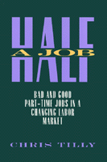

<body bgcolor="#FFFFFF" text="#000000" link="#0000FF" vlink="#CC0000" alink="#CC0000"><center><hr width="350" size="1" align="center" noshade>An up-to-date and in-depth analysis of a disquieting trend in the U.S. labor market<hr width="350" size="1" align="center" noshade><p><a href="https://cdcshoppingcart.uchicago.edu/Cart/ChicagoBook.aspx?ISBN=9781566393812&&PRESS=temple" target="_top">Buy this book!</a> | <a href="https://cdcshoppingcart.uchicago.edu/Cart/Cart.aspx?PRESS=temple" target="_top">View Cart</a> | <a href="https://cdcshoppingcart.uchicago.edu/Cart/Cart.aspx?PRESS=temple" target="_top">Check Out</a></p><p></p></center><!--none//--><h1>Half a Job</h1>
<H2>Bad and Good Part-Time Jobs in a Changing Labor Market</H2>
<h3>Chris Tilly</h3>
<P>cloth 1-56639-381-7 $49.95, Jan 96, <FONT COLOR=#990033>Out of Print</FONT>
<br>paper 1-56639-382-5 $33.95, Jan 96, <FONT COLOR=#990033>Available</FONT>
<br>Electronic Book 1-43990-397-2 $33.95 <FONT COLOR=#990033>Out of Print</FONT>
<BR> 240 pp
6x9
18&nbsp;tables 15&nbsp;figures
</P><BLOCKQUOTE><I>"Chris Tilly's study of part-time work differs from, and is superior to, most others because he puts the organizations that hire part-time workers at the center of his analysis. His ideas about part-time work are derived logically and rigorously. This is true, most especially, of the original and useful distinction he draws between retention and secondary part-time jobs that is at the heart of the book. </I>Half a Job<I> is original, distinctive, and significant."</I>
<br>&#151<b>Eileen Appelbaum</b>, Economic Policy Institute<I></I></BLOCKQUOTE>
<p>Over 20 million people are working part-time in the United States, more than six million of them involuntarily. Both <i>Time</i> and <i>Fortune</i> magazines have run recent cover stories about this constrained faction of the workforce, who tend to earn on average 40 percent less than full-time workers. Addressing this disturbing trend, Chris Tilly presents a current, in-depth analysis of how U.S. businesses use part-time employment, and why they are using it more and more.
<p>Worker demand for part-time jobs peaked more than twenty years ago, but employers' desires for cheap labor and schedule flexibility have continued to drive the long-term growth of part-time jobs. Tilly argues that this growth is a reaction to the expanding trade and service industries, which, by their nature, depend on part-time workers. Examining the nature and purposes of the different types of part-time employment, he explores the roots of part-time jobs in the organization of work, and the inadequacies of existing public policies on part-time employment.
<p>Using not only statistical analysis but over eighty interviews with employers in the retail and insurance industries, Tilly suggests new approaches to providing flexibility without insecurity.
<BR>&nbsp;<h2>Reviews</h2>
<p><I>"In the 1990s, for every person officially counted as 'unemployed,' at least one more person is involuntarily working part-time. These are the workers with only half a job. And their ranks are growing. In this important and compassionate book, scholar-activist Christ Tilly tells us why&#151and why it matters to the American standard of living."</I>
<br>&#151<b>Bennett Harrison</b>, Harvard University
<p><I>"Companies are creating part-time jobs even though workers don't want them. Why are they doing this? In </I>Half a Job<I>, Tilly takes on this question and through rigorous documentation helps to make sense of the eroding situation of the U.S. worker. For those seeking to understand the growth of part-time work as well as those attempting to organize and represent the new contingent work force, Tilly's book is a valuable contribution."</I>
<br>&#151<b>John J. Sweeney</b>, President of the Service Employees International Union
<p><i>"</i>In Half a Job<i>, Chris Tilly seeks answers to some fundamental questions about this labor market phenomenon: why part-time employment has grown, what kinds of part-time jobs exist, and how businesses make decisions about and use part-time workers..... Operating with few legal constraints, companies have many staffing options, and Tilly's skillful blending of qualitative and quantitative information helps us to understand the choices they make."</i>
<br>&#151<b><i><a href="http://www.findarticles.com/p/articles/mi_m1153/is_n9_v120/ai_20064087" target="new">Monthly Labor Review</a></i></b>
<p><i>"...someone wanting to understand the nature of part-time employment can do no better than Tilly's book. The analysis is careful and even handed. Even more impressive is the bag of tools that Tilly employs to construct a picture of part-time employment. It is a model for how empirical research should be conducted."</i>
<br>&#151<b><i><a href="http://www.findarticles.com/p/articles/mi_qa3620/is_199707/ai_n8766730" target="new">Eastern Economic Journal</a></i></b>
<BR>&nbsp;<h2>Contents</h2><P>
<p>List of Tables and Figures
<br>Acknowledgments
<br>1. Half a Job Is Not Enough
<br>2. Why Has Part-Time Employment Continued to Grow?
<br>3. Two Theoretical Frameworks
<br>4. Good and Bad Part-Time Jobs
<br>5. Implications of the Distinction Between Good and Bad Part-Time Jobs
<br>6. How Businesses Set the Level of Part-Time Employment
<br>7. Cycles and Trends
<br>8. The Case for New Policies
<br>Appendix: A Formal Model of the Cyclical Adjustment of Part-Time Employment in <br>Noncyclical Industries
<br>Notes
<br>References
<br>Index
</P><BR>&nbsp;<H2>About the Author(s)</H2>
<table><tr><td valign="top"><img src="/tempress/authors/1162_au.gif" height="90" width="75"></td><td width="100%" valign="middle"><p><b>Chris Tilly</b> is Associate Professor in the Department of Policy and Planning at the University of Massachusetts at Lowell.</P></td></tr></table>
<BR><H2>Subject Categories</H2>
<p><A HREF="/tempress/labor.html" TARGET="_top">Labor Studies and Work</a>
<BR><A HREF="/tempress/sociology.html" TARGET="_top">Sociology</a>
</p>
<p align="center"><a href="https://cdcshoppingcart.uchicago.edu/Cart/ChicagoBook.aspx?ISBN=9781566393812&&PRESS=temple" target="_top">Buy this book!</a> | <a href="https://cdcshoppingcart.uchicago.edu/Cart/Cart.aspx?PRESS=temple" target="_top">View Cart</a> | <a href="https://cdcshoppingcart.uchicago.edu/Cart/Cart.aspx?PRESS=temple" target="_top">Check Out</a></p><p><font face="Arial" size="1"><a href="copyright.html" onMouseOver="window.status='Web Copyright Policy';return true;" onMouseOut="window.status=''" title="Web Copyright Policy">&copy;</a> 2015 <a href="http://www.temple.edu" target="new" onMouseOver="window.status='Link to Temple University home page';return true;" onMouseOut="window.status=''" title="Link to Temple University home page">Temple University</a>. All Rights Reserved. http://www.temple.edu/tempress/titles/1162_reg.html</font></p>